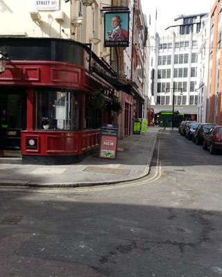
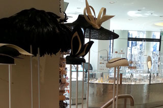
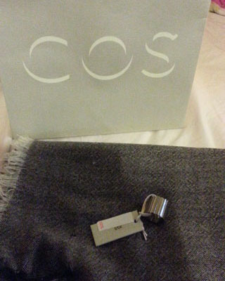
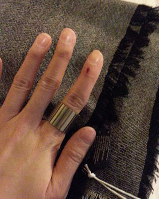

이게 4월4일 점심때쯤 풍경 ㅡㅡ;;
다들 황당해하면서 사진을 찍어대었음 ㅋㅋㅋㅋㅋ
날씨왜이래 봄 영영 안오는거 아닌가 투덜투덜 거렸는데
어제/오늘 날씨가 음청 좋았다
이럴때는 무조건 나가서놀아야 한다 +_+

날이갈수록 사람많은곳 피해 골목골목으로 댕기는 기술만 늘고있다;;
센트럴 사람많다고 불평하믄서도 꼬박꼬박 놀러나간다능^^;;;;

요즘 동물귀 모양 모자가 유행인것인가
오늘 발견한 퇴끼모자 이것도 귀엽다 ㅋㅋㅋㅋ

봄/가을용 스카프 하나 사고싶었는데
COS에서 세일하고있는거 싸게 잘 샀당 희희
반지는 50%하길래 충동구매 ㅡㅡ;;
세일의 무서움은 바로 이것;;;;

일케 두껍고 심플한 디자인 반지를 발견하믄 하나둘씩 집어온다;;;
그나저나 손꾸락에 저 상처는 언제생긴거란 말인가;;
돌아올때 씐나서 옷장정리할려구
동네 Tiger에서 옷걸이 색색별로 사왔다
두꺼운 겨울코트 옷장에 다 넣고
봄옷 죄다 꺼내서
Top-연두색 / Dress-보라색 / Outer-파란색 으로 색분리해서
걸어놓을려고했는데 옷걸이가 모자라;; 더사올걸 ;ㅂ;
그래도 대충 정리는 된게 보고있으면 뿌듯하다 희희
.......이래놓고 거짓말처럼 또 다시 추우지는건 아니겠지;;